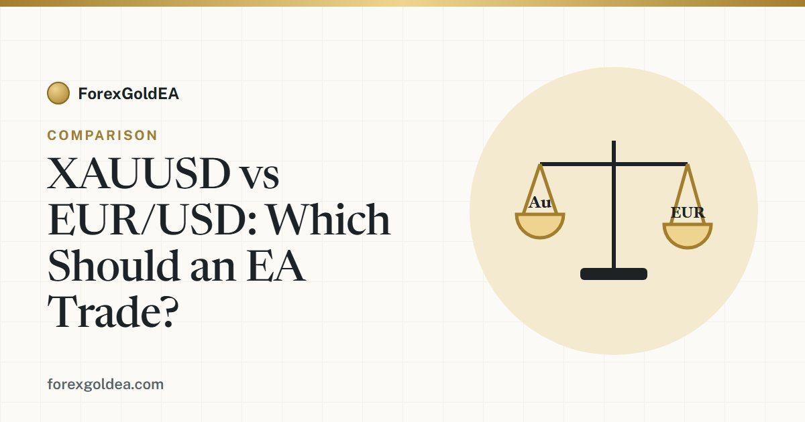

XAUUSD vs EUR/USD: which one should a gold EA actually trade?

Gold (XAU/USD) and EUR/USD are two of the most popular markets to automate — but they behave very differently. If you're deciding which one to point an expert advisor at, here's an honest look at how they compare and why most "gold EAs" are built specifically for XAU/USD.
The core difference: volatility and range
The biggest gap between the two is how much they move. EUR/USD is the most heavily traded currency pair in the world, which tends to make its intraday moves relatively smooth and contained. Gold, by contrast, can travel a much larger daily range and react sharply to inflation data, interest-rate expectations and risk-off events.
For an automated strategy, that difference is everything. A bigger range means more opportunity per trade — but also faster, deeper swings against you. An EA built for EUR/USD's rhythm can behave very differently when dropped onto gold, and vice-versa.
| Trait | XAU/USD (gold) | EUR/USD |
|---|---|---|
| Typical daily range | Large | Moderate |
| Volatility | High, event-driven | Lower, steadier |
| Spread | Usually wider | Usually tightest in FX |
| Main drivers | Inflation, rates, risk sentiment, USD | ECB/Fed policy, EU & US data |
Spreads and trading cost
EUR/USD typically carries the tightest spreads of any pair, which is friendly to high-frequency or scalping systems. Gold's spread is usually wider and can widen further around news. A good gold EA accounts for this — it isn't trying to scalp a few cents; it targets moves large enough that the spread is a small fraction of the trade.
Sessions: when each one actually moves
EUR/USD is most active during the London and London–New York overlap. Gold also comes alive in those hours but stays sensitive around major US releases and can move during quieter periods too. If your EA has session filters, they'll need different settings for each market — copying gold settings onto EUR/USD (or the reverse) rarely works well.
Why most gold EAs are built for XAU/USD
Gold's larger, more directional moves give a rules-based system room to define clear stops and targets and still capture a meaningful move. That's why tools like ForexGoldEA are engineered specifically around XAU/USD behaviour — the entry logic, stop distances and risk settings are all sized for gold's range, not for a low-volatility currency pair.
Can one EA trade both?
Technically yes, but usually not with the same settings. If an EA supports multiple symbols, it should use a different preset per market. Running a single "one-size-fits-all" configuration across gold and EUR/USD is one of the most common reasons automated accounts underperform.
A quick word on risk
Gold's higher volatility cuts both ways: bigger opportunity and bigger risk. Trading XAU/USD or any pair on margin carries a high level of risk and may not be suitable for everyone. Size your risk per trade to the market's range, keep a fixed stop on every position, and remember that backtested figures are historical and don't guarantee future results.
Bottom line
EUR/USD suits steady, low-volatility, tight-spread systems. Gold rewards strategies built for range and event-driven moves — which is exactly what a purpose-built gold EA is for. The winning choice isn't really "XAUUSD vs EUR/USD"; it's matching your EA to the market it was designed to trade.
Affiliate disclosure: we earn a commission when you open and fund an account through our partner links, at no extra cost to you.